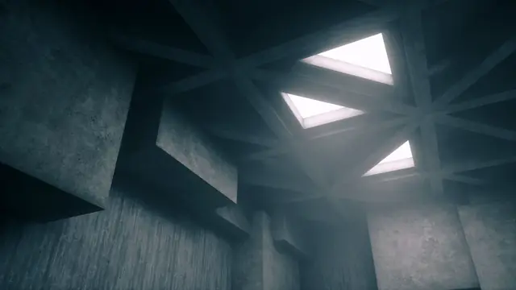
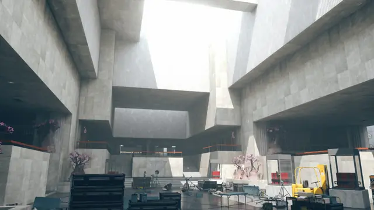
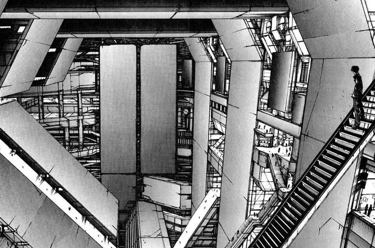
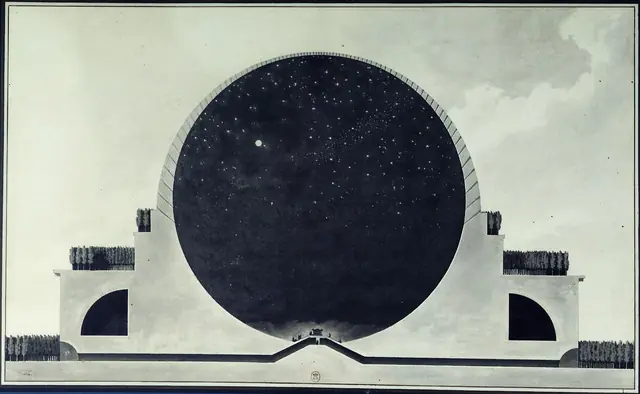
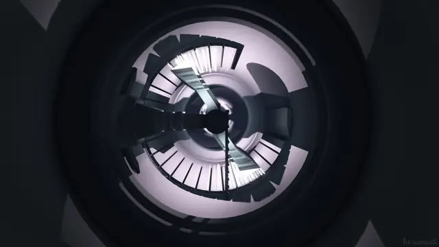
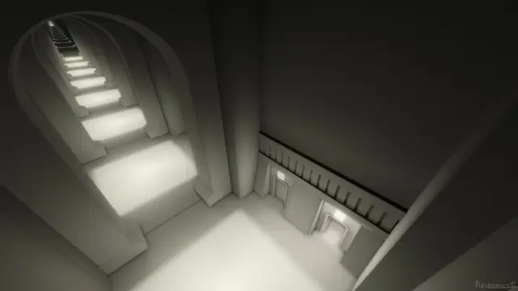
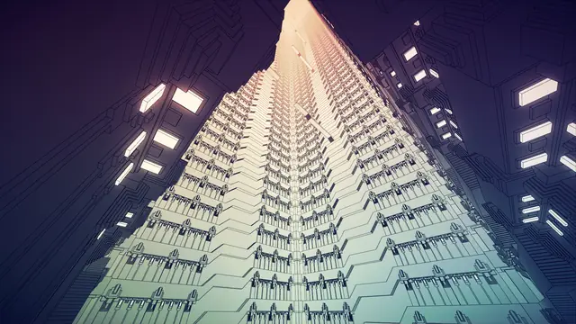
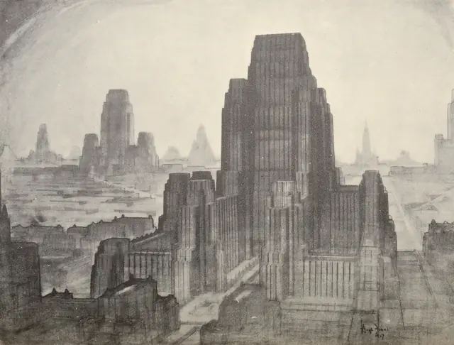
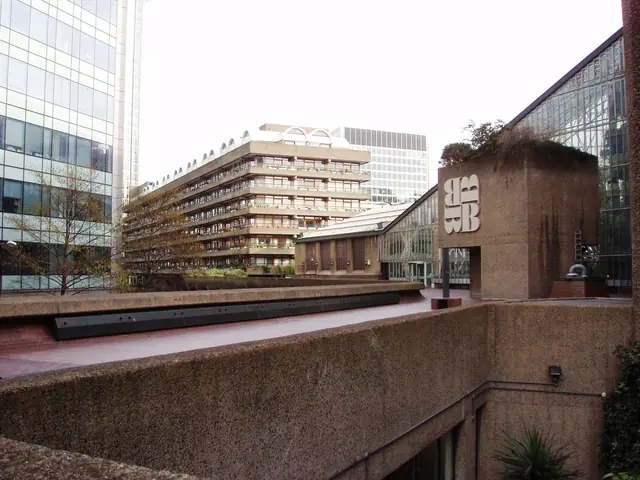
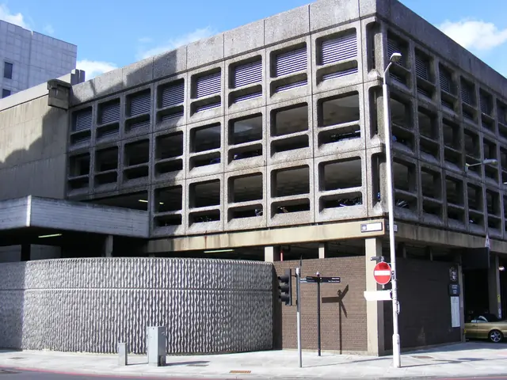

The feel
Brutalism is raw concrete at a large scale: big concrete shapes, rough textured surfaces and a sense of mass, weight and scale.1 Everyone has an opinion on it. Its origins were often utopian, but colossal concrete buildings are widely seen as oppressive, even dystopian.2 For Stuart Macdonald, world design director on Remedy's Control, it has "this sense of power, weight, strength and stability", and it feels like science fiction: where the 1950s imagined glass towers and flying cars, his team saw "huge edifices of concrete".2
In games it stands for institutions: Remedy chose it for Control's government bureau because the American government had adopted the style, which cast the building as "a place of control and order, solidity and position".2 Its plainness helps play too. Narrative designer Brooke Maggs says its straight, clean lines keep the environment readable while the player is destroying things, where a busy space would be hard to follow.3 Remedy also played on the contrast between a mundane concrete office and the chaos that wrecks it seconds later.2
- monumental
- heavy
- quiet
- institutional
- sunlit
- unknowable
Where it comes from
Le Corbusier's Unité d'Habitation in Marseille showed the approach from the late 1940s, and the English architects Alison and Peter Smithson first used the term New Brutalism in the early 1950s.1,4 The architectural historian Reyner Banham's 1955 review of their school at Hunstanton, which openly displayed its steel and brick structure and its services, established the movement,1 and his article The New Brutalism defined it by memorability as an image, clear exhibition of structure and valuation of materials "as found".5 In the 1960s it was dominated by béton brut, raw concrete printed with the pattern of its wooden shuttering, as at London's National Theatre, or hammered to expose its aggregate, as at the Barbican.1 It was widely used for government institutions, universities and social housing from England to the United States, Brazil, India and Japan, before falling largely out of favour in the 1980s.4 Remedy's Control (2019) is one of the first big-budget games to go all out on grey, austere concrete, set entirely inside a monumental concrete building.2
Core elements
Massive concrete silhouettes
Banham's first quality was memorability as an image.5 The Smithsons and others set out to match what they saw as the strength of Le Corbusier's work, powerful visual images, and built massive concrete silhouettes.4 Scale mattered, with an emphasis on mass and large concrete shapes.1
Exposed structure
His second was clear exhibition of structure.5 The Smithsons' school at Hunstanton displayed its steel and brick structure and its services,1 leaving steel beams and precast concrete slabs exposed to view, stark and austere.4 In the 1960s service ducts and ventilation towers went on show too.1
Materials as found
His third was the valuation of materials "as found".5 For concrete that meant béton brut, raw and unfinished, either printed with the pattern of its wooden shuttering or hammered back to expose the aggregate.4,1 At the Barbican most exposed surfaces were pick-hammered, with smaller areas bush-hammered, to show the granite in the mix.6
Repetition and rhythm
At the Barbican the exposed ends of the beams form a rhythm of large bays.6 Control's Oldest House repeats coffered concrete ceilings, soaring atriums and patterned walls and doors,7 and its interior design draws on Kevin Roche's "very stark repetition of grids and desks".2
Light on bare surfaces
Concrete looks best well lit: Macdonald compares it to architectural photography, which is "all about how the light washes over surfaces".2 Tadao Ando, whose work shaped Control's lighting,2 cut a cross through the concrete wall behind the altar of his Church of Light, so daylight forms a cross of light inside.8
Warm accent materials
Timber, brass and carpet set off the concrete: the Barbican's theatre is lined in lightly stained Peruvian walnut that contrasts with its bush-hammered balcony fronts,6 and Control pairs board-formed concrete with cherry wood handrails inlaid with brass and a low-pile orange carpet.7
How to do it
Collect real building references
Remedy started from real government facilities, civic centres and universities.2 New York's windowless Long Lines building became an origin point, joined by Boston City Hall, the Andrews Building at the University of Toronto Scarborough, the interior of the Met Breuer and Carlo Scarpa's stepped concrete for ritual entrances and stairs.2
Block out at human scale
Start from ordinary metrics so the rooms feel built for people: interior walls 300 cm high, doors 110 by 220 cm and steps 15 cm high and 25 cm deep.9 Then break them on purpose. Long or tall flights of stairs feel monumental, and the unusual only works against enough ordinary elements.9
Plan the formwork
Exposed concrete shows its formwork: panel joints are always visible, standard sheets are usually 1220 by 2440 mm, and the designer sets where the tie holes go. One way to handle joints and ties is to make a feature of them.10 For a board-marked finish, timber boards line the form and each board's grain prints in reverse on the wall, so any sloppy joint is cast in for good.10,11
Set up the material
Fresh concrete has a measured base colour of 0.51.12 Timber and unsealed plywood forms give a matt finish,10 so use a high roughness and leave specular at its 0.5 default rather than zero.12 Concrete cast in summer starts lighter than concrete cast in winter, so pours from different seasons can differ in tone for months.10
Leave the walls bare
The old habit was to cover walls with marks, water stains, cables and pipes to add visual interest.2 For Control, Remedy kept wall surfaces bare and trusted the lighting artists to give them life, though the environment artists took some convincing.2
Compose each room around a centre
Even a mundane office can be approached "as if it was a church, with a clear centre, an altar or plinth".2 Kubrick's balanced, symmetrical, single-point perspectives shaped Control's look, selling the idea of ritual processions and ceremonial thresholds.2
Light with bounced daylight
Remedy looked to churches, processions and the work of Tadao Ando when lighting the Oldest House.2 Global illumination with infinite diffuse bounces and sky shadowing keeps interiors much darker than outdoors, and letting a little sky light leak in stops them going fully black.13 Baked lightmaps give indirect light that often looks better and costs almost nothing at runtime, but cannot change once baked.14
Cheat sheet
- Material
- Raw concrete, board-marked or hammered1
- Formwork
- Sheets 1220 × 2440 mm, joints and ties visible10
- Base colour
- 0.51 for fresh concrete12
- Roughness
- High, with Specular left at 0.512
- Metrics
- Walls 300 cm, doors 110 × 220 cm, steps 15 × 25 cm9
- Walls
- Bare, no added stains, cables or pipes2
- Composition
- Symmetrical, single-point, a clear centre2
- Light
- Infinite diffuse bounce, interiors darker than outside13
Do
- Leave wall surfaces bare and let the lighting give them life.2
- Show how the concrete was made: the print of its shuttering, or aggregate exposed by hammering.1
- Keep lines straight and clean so the space stays readable while it is being destroyed.3
- Give each room a clear centre, like the altar or plinth of a church.2
- Set warm timber, brass or carpet against the grey.6,7
Avoid
- Covering walls with marks, water stains, cables and pipes just to add interest. Remedy had to talk its environment artists out of it.2
- Rooms that are busy all the time. Control's team kept to straight, clean lines because a cluttered space is hard to read in a fight.3
- Panel joints and tie holes left to chance. They always show, so place them on purpose.10
- Setting Specular to zero to make concrete matt. Raise Roughness instead.12
- Building at full real-world size. Levels made too much like real architecture feel too big, complicated and implausible.9
Tools and tutorials
- Board Formed Concrete: An Architect's Guide
How the wood formwork leaves its marks. Watch before you make the texture.
- Concrete Material in Substance Designer
Building a procedural concrete material from scratch.
- Lumen global illumination
Unreal's real-time bounce light, with infinite diffuse bounces.13
- Poly Haven concrete textures
CC0 scanned concrete to blend with your own board marks.
- SOS Brutalism
A large database of real brutalist buildings to study, with photos.
- Unreal Engine: Physically Based Materials
Measured base colours, including fresh concrete, and why specular stays at 0.5.12
- Godot: Using Lightmap global illumination
Baked indirect light that costs almost nothing at runtime.14
Palette
Sampled from Control's Oldest House and Boullée's Cenotaph: six greys and one red.
Feel the vibe
In motion
Listen
The track on the headphones in Control's Ashtray Maze. It adapts to what the player does, so it never seems to end.15
YouTubeFrom Control's score. Low drones and pressure, for a building that seems to listen.
YouTubeCalm, looping ambient to play while you build repeating architecture.
YouTubeFrom Clint Mansell's score for Ben Wheatley's High-Rise (2015), the tower-block film below.
YouTubeRemedy used Kubrick's A Clockwork Orange, with its oppressive government agency, as a reference for Control.2
YouTube
More references










Games
- Control
A brutalist government building that shifts around you.2 Study its symmetry, bare walls and warm accents.
- NaissanceE
Study how pale blocks, hard light and shadow build an abstract megastructure.
- Kairo
Study monumental abstract architecture used as a puzzle space.
- INSIDE
Study its grey concrete facilities and muted palette.
- Manifold Garden
Study how far repetition can go before it becomes the whole world.
Film, art and more
- Cenotaph for Newton
Study pure geometry at an inhuman scale.
- Unité d'Habitation, Marseille
Where the style shows in Le Corbusier's work from the late 1940s.1
- Barbican Estate
Concrete pick-hammered and bush-hammered to expose its granite aggregate.6
- BLAME!
Study its endless megastructure drawn in ink for impossible scale.
- The Metropolis of Tomorrow
Study Hugh Ferriss's drawings for massing and light, a visual parallel to brutalist renders.
- High-Rise
Ben Wheatley's film of J. G. Ballard's novel. Study the tower block as a stage for social collapse.
- The Brutalist
An architect's life told through a concrete building.
Sources
- 1Brutalism in architecture
- 2Remedy's Control is built on concrete foundations
- 3Exploring the world-driven game design of Control
- 4Brutalism
- 5New Brutalist Image 1949–55: “Atlas to a New World” or, “Trying to Look at Things Today”
- 6Barbican: official list entry 1352667
- 7Brutalism bolstered Control’s success, but why is the movement still so trendy?
- 8Tadao Andō
- 9Metrics
- 10Formwork for visual in-situ concrete
- 11Tips for Building With Board-Form Concrete
- 12Physically Based Materials
- 13Lumen Global Illumination and Reflections
- 14Using Lightmap global illumination
- 15The story behind the Old Gods of Asgard, Remedy Entertainment's favorite band